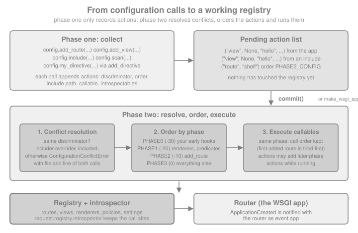

Configuration & the Configurator
|
This content was generated with the assistance of AI and should be verified against the official documentation before being relied on in production. |
This page is written against Pyramid 2.1 (the 2.1-branch documentation and the 2.1 release installed from PyPI) on
Python 3.13, checked on 2026-10-07; Pyramid 2.1 itself supports Python 3.10 and newer. Every Python example was
executed with those versions and exercised through webtest.TestApp. The running example is the Bookshelf Shelves
scenario: a small catalogue of public shelves owned by users, which grows over the following pages of this section.
"Configuration" has two meanings in Pyramid, and mixing them up is the source of most beginner confusion. The first
meaning is the one every framework has: deployment settings such as a database URL, read from an .ini file or the
environment. They are covered in the settings page of this section (settings, environment and .ini files). The second meaning is Pyramid’s own: plugging the code you wrote into the
framework. Telling Pyramid "call this function when a request matches that route" is configuring it, and the
object that records such statements is the Configurator. This page is about the second meaning: how configuration
statements are made, how they are collected, how conflicts between them are detected and resolved, and how they can
be extended and inspected. Pyramid builds all of this on a single component registry from zope.interface, which is
why a configured application is, in the end, nothing but a populated registry plus a router; the design rationale is
in the official Design Defense and in the architecture page of this section.
The nearest equivalents elsewhere on this site are Flask’s application factory with blueprints
(Application Factory & Project Layout,
Blueprints) and Django’s INSTALLED_APPS plus include() in the URLconf
(Project Structure & Apps). The big difference is that Flask and
Django have no conflict detection: later registrations silently win, while Pyramid refuses to start an ambiguous
application.
Imperative and Declarative Configuration
Pyramid offers two ways to say the same thing, and they are exactly equivalent.
Imperative configuration is a sequence of Python statements calling methods on a Configurator. The full power of
Python (conditionals, loops, functions) is available, and nothing is magic: what you call is what is registered.
from pyramid.config import Configurator
from pyramid.response import Response
from webtest import TestApp
def list_shelves(request):
return Response("shelves: ada, grace")
with Configurator() as config:
config.add_route("shelves", "/shelves")
config.add_view(list_shelves, route_name="shelves")
app = config.make_wsgi_app()
print(TestApp(app).get("/shelves").text)The output is shelves: ada, grace. Leaving the with block pops the configurator from the thread-local stack and,
if no exception was raised, commits the pending configuration; make_wsgi_app() then always implies a final commit.
Source: Application Configuration
Declarative configuration puts the statements next to the code they describe, as decorators, and relies on a
scan to find them. A decorator such as @view_config registers nothing by itself: it only attaches a callback to
the function. Nothing happens until config.scan() imports the modules of a package and executes the callbacks it
finds, which produces the same config.add_view(...) calls you would have written by hand. The advantage is
locality: the route name, permission, renderer and predicates sit above the view that uses them instead of in a
central file. The cost is indirection: if you forget to scan a module, its views simply do not exist, and the
application answers 404 instead of raising an error.
Most real projects mix both styles: infrastructure (routes, policies, includes, tweens) imperatively in main() or
in includeme functions, and views declaratively with @view_config. This is also what the cookiecutter starter
generates. Its __init__.py, produced from the 2.1-branch of pyramid-cookiecutter-starter with the Jinja2
template language, is a complete example of the mix:
from pyramid.config import Configurator
def main(global_config, **settings):
""" This function returns a Pyramid WSGI application.
"""
with Configurator(settings=settings) as config:
config.include('pyramid_jinja2')
config.include('.routes')
config.scan()
return config.make_wsgi_app()Source: pyramid-cookiecutter-starter (the sqlalchemy and
zodb backends add further includes, such as one for the models, to the same function)
The Configurator
A Configurator is the object you call to build an application. Its constructor can set the most common pieces in
one go, and every one of them has a method equivalent that can be called later.
| Constructor argument | Meaning |
|---|---|
|
A dictionary of deployment settings. It becomes |
|
The package that relative names and asset specifications are resolved against. By default it is the package of the
code that created the |
|
The package in which the main |
|
The default root factory used for traversal and as the source of |
|
An |
|
A list of renderer registrations to use instead of the default set ( |
|
A permission applied to every view that does not declare its own. Also |
|
The factory that creates |
|
Replacements for the corresponding framework components. |
|
A prefix prepended to every route added through this configurator (since 1.2). |
|
|
|
|
|
An existing registry to configure. If supplied, every other constructor argument except |
Source: pyramid.config API
Three habits are worth adopting from the start. First, use the configurator as a context manager (with
Configurator(settings=settings) as config:, available since 1.9): it makes config the thread-local current
configurator so that helper code can find the registry, and it commits on a clean exit. Second, keep main() short:
a list of include calls and one scan is easy to read and easy to override. Third, never keep the Configurator as
a global; it is a build-time object. What survives at run time is the application returned by make_wsgi_app()
and the registry behind it, reachable from any request as request.registry.
The configurator is also not a one-shot object. Methods such as config.add_settings(), config.get_settings(),
config.with_package() and config.registry work on the same underlying registry, and the thread-local helpers are
described in the official page on threadlocals.
from pyramid.threadlocal import get_current_registry
with Configurator(settings={"shelves.page_size": "20"}) as config:
assert get_current_registry() is config.registry
config.add_settings({"shelves.default_owner": "ada"})
settings = config.get_settings()
print(settings["shelves.page_size"], settings["shelves.default_owner"])
print("debug_routematch" in settings, settings["default_locale_name"])Settings from an .ini file arrive as strings, as "20" here; coercion with asbool and aslist is covered in
the settings page. The built-in keys, such as debug_routematch and default_locale_name, are filled in with their
defaults and are available both bare and with the pyramid. prefix.
Source: Thread Locals
Declarative Configuration: config.scan and Venusian
The scan is implemented by Venusian, a separate small library from the Pylons Project. A decorator calls
venusian.attach(...) to hang a callback on the decorated object; Configurator.scan() creates a Venusian
Scanner, which imports the modules of a package recursively and runs the callbacks whose category was
requested. Pyramid passes itself to the scanner so that @view_config, @view_defaults, @subscriber,
@notfound_view_config, @exception_view_config and @forbidden_view_config end up calling the matching
configurator method. Because decorators stay inert until scanned, the same decorated function can be scanned by more
than one application (or not at all in a unit test).
The shelves package below shows the usual layout. Each listing is one file of the package; the package also contains
an empty __init__.py in shelves/scripts/.
from pyramid.config import Configurator
def main(global_config, **settings):
with Configurator(settings=settings) as config:
config.include(".routes")
config.include(".api", route_prefix="/api")
config.scan(ignore=".scripts")
return config.make_wsgi_app()def includeme(config):
config.add_route("home", "/")
config.add_route("shelves", "/shelves")def includeme(config):
config.add_route("api_books", "/books")
config.add_route("api_book", "/books/{id}")from pyramid.view import view_config
@view_config(route_name="home", renderer="json")
def home(request):
return {"app": "Bookshelf Shelves"}
@view_config(route_name="api_book", renderer="json")
def api_book(request):
return {"id": int(request.matchdict["id"])}print("seed.py imported while scanning")import shelves_optional_dependency_that_is_not_installedCalling the main function, as a pserve run would, builds the application. The module seed.py is a stand-in for
a helper script that does work when imported; the ignore=".scripts" argument keeps the scan away from it.
from shelves import main
app = main({})
client = TestApp(app)
print(client.get("/").json)
print(client.get("/api/books/7").json)The two requests print {'app': 'Bookshelf Shelves'} and {'id': 7}. Note that /api/books/7 has the /api
prefix that main gave to the .api include, while api_book itself is declared with /books/{id}.
Source: View Configuration
Arguments of scan
| Argument | Meaning |
|---|---|
|
A package or module object, or a dotted name, which may be relative ( |
|
The Venusian categories whose callbacks are executed. The default is |
|
A string or callable, or a list of them. A full dotted name excludes that module or package and everything below it;
a name starting with a dot is relative to the scanned package; a callable receives the dotted name and returns |
|
A callback invoked with the dotted name of a module that failed to import. Without it, every import error during the scan propagates and aborts startup. Re-raise inside the callback to keep an error fatal. |
|
Extra keyword arguments for the Venusian |
Source: Venusian API
The two failure modes of a scan are shown by the scripts subpackage. Scanning without ignore imports seed.py
and runs its side effect; scanning a package that contains a module with a missing optional dependency fails unless
an onerror callback decides otherwise.
import contextlib
import io
import sys
buffer = io.StringIO()
with contextlib.redirect_stdout(buffer):
probe = Configurator()
probe.include("shelves.routes")
probe.scan("shelves", ignore="shelves.scripts.optional")
print(repr(buffer.getvalue()))
def skip_import_errors(name):
if not issubclass(sys.exc_info()[0], ImportError):
raise # anything but an ImportError stays fatal
try:
Configurator().scan("shelves.scripts")
except ImportError as exc:
print("default scan failed:", exc.name)
Configurator().scan("shelves.scripts", onerror=skip_import_errors)
print("scan with onerror finished")The first line printed is 'seed.py imported while scanning\n', proof that the scan executed module-level code, the
second is default scan failed: shelves_optional_dependency_that_is_not_installed and the last is scan with onerror
finished.
Source: Venusian API
Because a scan imports code, keep these rules in mind:
-
Never scan a directory you do not control: scanning is an
import, and importing runs arbitrary module-level code. -
Keep module-level code free of side effects (connecting to services, starting threads, reading the environment). The scan imports every module even when it contains no decorator, so a side effect runs at startup, once per worker process.
-
Scan the smallest package that contains your decorators (
config.scan(".views")) in big applications; useignorefortests,scriptsand other packages that are not part of the application. -
A decorated view in a module that is never scanned is silently absent. When a route answers 404 although its view exists, check the scan first, then the introspector described below.
Including Configuration: config.include and includeme
config.include(callable, route_prefix=None) runs a configuration callable against a configurator and is the
building block of every reusable Pyramid package. The callable takes a single argument, conventionally config. It
can be given as a function, as a dotted name of a function ("shelves.api.includeme"), as a module (Pyramid then
looks for a callable named includeme in it), or as a dotted name of a module ("pyramid_jinja2"). A dotted name
starting with a dot, as in config.include(".routes"), is resolved relative to the current package.
The callable does not receive the configurator you called include on. It receives a new Configurator object that
shares the same registry but has its own package, route_prefix and, most importantly, its own include path, the
chain of callables that led to the current statement. That chain is how Pyramid knows, later on, which configuration
came from the includer and which from the included code.
route_prefix
route_prefix is prepended to the pattern of every add_route made inside the included callable, and to the
routes of any callable that one includes in turn. Prefixes compose. A route prefix can also be applied without an
include with the route_prefix_context context manager, or for the whole configurator with the constructor
argument. The route names are untouched, which is what allows the same package to be mounted at different places
by different applications.
def v1(config):
config.add_route("v1_book", "/books/{id}")
def api(config):
config.include(v1, route_prefix="/v1")
config.add_route("api_ping", "/ping")
def users(config):
config.add_route("users", "", inherit_slash=True)
config = Configurator()
config.include(api, route_prefix="/api")
config.include(users, route_prefix="/users")
with config.route_prefix_context("/admin"):
config.add_route("admin_home", "/")
config.commit()
mapper = config.get_routes_mapper()
for route in mapper.get_routes():
print(route.name, route.pattern)The printed routes are v1_book api/v1/books/{id}, api_ping api/ping, users users and admin_home admin/: a
route added under a prefix is stored without its leading slash, and requests still match it as /api/v1/books/7.
The users route shows inherit_slash=True (new in 2.0): with an empty pattern, the route
takes its slash from the prefix: the prefix /users gives /users and the prefix /users/ gives /users/.
Two details are worth knowing. route_prefix affects routes (and, through them, static views, which are implemented
on top of add_route and add_view), not views registered with a bare add_view, which has no pattern. And third
party add-ons follow the same convention: config.include("pyramid_jinja2") is the line the cookiecutter project
uses, and the pyramid.includes setting of an .ini file does the same without touching Python (see the settings
page).
Two-Phase Configuration, Conflicts and Their Resolution
What happens when you call a directive
A configurator created with the default autocommit=False does not act when you call add_view, add_route or
any other directive. It appends one or more actions to a pending list. An action carries a discriminator (a
hashable value that identifies what is being configured: for a view, a tuple built from its context, name, route
name and predicates), the callable that does the work, an order, the include path and the file and line of
the call. Nothing touches the registry until commit(), which make_wsgi_app() and the end of the with block
call for you.

The practical consequences are the main reasons this design exists:
-
Order of most statements does not matter. A view that names
route_name="shelves"can be added before the route exists, and a view can use a renderer that is registered later. -
Conflicts are found before the first request. Two actions with the same discriminator that cannot be resolved stop the application from starting and report both call sites.
-
Overrides are explicit. Code that includes another package can replace a single statement of it without editing it.
The exception is anything with an inherent order. Routes are matched in the order they were added, first match wins,
and that order is not rearranged by two-phase configuration (nor by the include tree: routes of an include appear at
the point of the include call). The official documentation says it directly: some methods, such as add_route,
have internal ordering constraints that two-phase configuration does not absolve.
def view_a(request):
return Response("a")
class UpperRenderer:
def __init__(self, info):
pass
def __call__(self, value, system):
return str(value).upper()
# the view names a route and a renderer that are registered afterwards
config = Configurator()
config.add_view(view_a, route_name="late", renderer="late.up")
config.add_route("late", "/late")
config.add_renderer(".up", UpperRenderer)
config.commit()
print("two-phase: view first, route and renderer later, no error")
# the same order, with autocommit, runs each call immediately
eager = Configurator(autocommit=True)
try:
eager.add_view(view_a, route_name="late")
eager.add_route("late", "/late")
except Exception as exc:
print(type(exc).__name__, "-", exc)The first configurator commits without error because both missing pieces exist by the time the actions run; the
autocommitting configurator raises ConfigurationError with the message No route named late found for view registration, since
the view’s action ran before the route existed.
Source: Two-Phase Configuration
Conflict detection
A conflict is two actions with the same discriminator that Pyramid cannot reconcile. For views, that means the same combination of context, name, route name and predicates; for routes, the same route name; for most single-valued settings (root factory, session factory, security policy), the setting itself.
from pyramid.exceptions import ConfigurationConflictError
def view_b(request):
return Response("b")
config = Configurator()
config.add_view(view_a, name="hello")
config.add_view(view_b, name="hello") # same predicates: ambiguous
try:
config.commit()
except ConfigurationConflictError as exc:
lines = str(exc).splitlines()
print(lines[0])
print(lines[1].lstrip().startswith("For: ('view'"))
print(sum("Line" in line for line in lines), "call sites reported")The output is Conflicting configuration actions, True and 2 call sites reported. In a real traceback the
report names the file and the line of each conflicting statement, abbreviated here:
pyramid.exceptions.ConfigurationConflictError:
Conflicting configuration actions
For: ('view', None, 'hello', None, '<hash of the predicates>')
Line 17 of file shelves/views.py:
config.add_view(view_a, name="hello")
Line 18 of file shelves/views.py:
config.add_view(view_b, name="hello")Conflict detection applies to imperative statements and to the ones produced by a scan alike. The configurator
methods that take part in it are add_renderer, add_request_method, add_resource_url_adapter,
add_response_adapter, add_route, add_traverser, add_view, set_authentication_policy,
set_authorization_policy, set_default_permission, set_locale_negotiator, set_request_factory,
set_root_factory, set_security_policy, set_session_factory and set_view_mapper; add_static_view takes part
indirectly because it is built on add_route and add_view.
Resolving a conflict
There are four ways out, from the best to the bluntest.
| Way | What it does |
|---|---|
Remove the ambiguity |
The "right thing": change the predicates, names or paths so that the statements no longer collide. Use the call sites in the error message to find them. |
Let the includer win |
Statements made by code that calls |
|
Commits what is pending. Later statements do not conflict with committed ones, they override them. The official documentation warns against calling it casually, and above all inside reusable configuration functions; it is meant for an application author, at the end of configuration, to override part of an add-on. |
|
Disables conflict detection and two-phase configuration altogether. Every call acts immediately, later calls
override earlier ones, and statements must be written in dependency order. Useful in tests; discouraged in |
def included(config):
config.add_view(view_a, name="hello")
def included_too(config):
config.add_view(view_b, name="hello")
# 1. the includer wins over the included callable
config = Configurator()
config.include(included)
config.add_view(view_b, name="hello")
print(TestApp(config.make_wsgi_app()).get("/hello").text)
# 2. two includes at the same level are siblings: neither wins
config = Configurator()
config.include(included)
config.include(included_too)
try:
config.commit()
except ConfigurationConflictError:
print("siblings conflict")
# 3. commit() in between turns the second statement into an override
config = Configurator()
config.add_view(view_a, name="hello")
config.commit()
config.add_view(view_b, name="hello")
print(TestApp(config.make_wsgi_app()).get("/hello").text)
# 4. autocommit: the last statement wins and nothing is detected
config = Configurator(autocommit=True)
config.add_view(view_a, name="hello")
config.add_view(view_b, name="hello")
print(TestApp(config.make_wsgi_app()).get("/hello").text)The four outputs are b, siblings conflict, b and b. The second case is the one that surprises people: the
"includer wins" rule compares include paths, and two sibling includes have neither as a prefix of the other. Always
call config.include(callable) rather than callable(config) for this reason, as the official page insists: a
direct call makes the statements belong to the caller’s include path and silently skips the automatic resolution.
Source: Advanced Configuration
A few more practical rules follow from the mechanism. Two scanned views that differ only by a predicate you forgot
to add conflict at startup, which is a feature. A conflict between your code and a third-party add-on’s defaults
is resolved by including the add-on from main() and declaring your override in main() itself, not by sprinkling
commit() calls. Tests that build many small configurations should use testing.setUp() or testConfig(), which
create an autocommitting configurator for you:
from pyramid import testing
with testing.testConfig(settings={"shelves.page_size": "5"}) as test_config:
test_config.include("shelves.routes")
request = testing.DummyRequest()
print(request.route_path("shelves"), test_config.autocommit)The output is /shelves True. The testing page of this section covers DummyRequest, DummyResource and
functional tests with WebTest in detail.
Source: pyramid.testing API
Extending Configuration: add_directive and config.action
A directive is a method of the configurator. add_view and add_route are directives; add_directive lets any
package add its own, so that applications using it can write config.add_health_check(...) in the same style as the
built-ins. Extension authors usually register their directives inside an includeme, so the user only has to
config.include("their_package") to get them.
A directive that can be expressed as calls to other directives (config.add_subscriber(...)) needs nothing more.
One that registers something new calls config.action(discriminator, callable, ...), which is the low-level
primitive every built-in directive uses:
Argument of config.action |
Meaning |
|---|---|
|
A hashable value, or |
|
The function to run at commit time, with optional positional and keyword arguments. The callable is optional: an action with only a discriminator reserves the name. |
|
An integer. Lower orders run first, within the same order actions run in the order they were added. It has no effect
with |
|
A sequence of introspectable objects created with |
The following example adds a health-check directive for the Bookshelf, with a conflict-aware name and one introspectable:
def add_health_check(config, name, check):
def register():
config.registry.health_checks[name] = check
intr = config.introspectable(
category_name="health checks",
discriminator=name,
title=f"health check {name}",
type_name=None,
)
intr["callable"] = check
config.action(("health check", name), register, introspectables=(intr,))
def health_extension(config):
config.registry.health_checks = {}
config.add_directive("add_health_check", add_health_check)
def database_ok():
return True
config = Configurator()
config.include(health_extension)
config.add_health_check("database", database_ok)
config.commit()
print(sorted(config.registry.health_checks))
try:
config.add_health_check("database", database_ok)
config.add_health_check("database", database_ok)
config.commit()
except ConfigurationConflictError:
print("duplicate health check name detected")It prints ['database'] and then duplicate health check name detected: the discriminator
('health check', 'database') makes two registrations of the same name an error, exactly as for views and routes.
add_directive itself does not take part in conflict detection, and a later call with the same name replaces the
earlier one. The action_wrap=True default wraps the directive so that the call site of config.add_health_check,
not the inside of your function, appears in conflict reports; keep it for any directive that creates actions.
Source: Extending Pyramid Configuration
Ordering actions: the phases
Because everything runs at commit time, an action that depends on another must say so with order. Pyramid defines
four constants in pyramid.config:
| Constant | Value | Used by |
|---|---|---|
|
-30 |
Reserved for you: actions that must run before any of Pyramid’s own directives. |
|
-20 |
|
|
-10 |
|
|
0 |
The default for every built-in or custom directive that does not say otherwise. |
An action may add further actions while the commit runs ("actions calling actions", since 1.6), as long as they
belong to the current or a later phase. A directive that expands into a route and a view must therefore run
before the phase of add_route, otherwise the route would be added after its phase has already been executed:
from pyramid.config import PHASE0_CONFIG
def add_report(config, name, view):
def register():
config.add_route(f"report_{name}", f"/reports/{name}")
config.add_view(view, route_name=f"report_{name}")
config.action(("report", name), register, order=PHASE0_CONFIG)
def report_extension(config):
config.add_directive("add_report", add_report)
def loans_report(request):
return Response("loans report")
config = Configurator()
config.include(report_extension)
config.add_report("loans", loans_report)
print(TestApp(config.make_wsgi_app()).get("/reports/loans").text)Source: Ordering Actions
The Introspector
Every directive can register introspectables: small dictionary-like records describing what was configured, with
a category, a discriminator within that category, a title and a type name. They are stored in an introspector, which
the application can query at run time as request.registry.introspector (a Configurator created with
introspection=False skips them). Debug toolbars and command-line reports are the typical consumers, but application
code can use it too, for example to build an index of the site from its routes.
Each introspectable carries title, category_name, discriminator, discriminator_hash, type_name and
action_info, which says where in your code the configuration call was made. Its data is read with the usual
dictionary methods. The introspector offers get(category, discriminator), get_category(category), categories(),
categorized() and related(introspectable).
intr = app.registry.introspector
print(intr.categories())
route = intr.get("routes", "api_book")
print(route["pattern"], "|", route.type_name, "|", route.action_info.src)
print([(item.category_name, item.title) for item in intr.related(route)])
print(sorted(entry["introspectable"]["name"] for entry in intr.get_category("routes")))The categories include routes, views, renderer factories, view predicates, route predicates,
view derivers, tweens, response adapters, accept view order and csrf storage policy. The route prints with
the pattern api/books/{id} (a route added under a prefix is stored without its leading slash; the matched path has one) and with
action_info.src equal to the source line config.add_route("api_book", "/books/{id}"), which is how a tool can
tell the developer where a given route was declared. related returns the view function shelves.views.api_book,
because a view that names a route is related to it. The last line is ['api_book', 'api_books', 'home', 'shelves'].
Within a view the same data is a one-liner, as in the official example: request.registry.introspector.get('routes',
request.matched_route.name)['pattern'].
Your own introspectables, as in add_health_check above, show up next to the built-in ones and may be related to
others with intr.relate(category_name, discriminator). A relation to something that does not exist makes the
commit fail.
The ApplicationCreated Event
When make_wsgi_app() finishes building the router, Pyramid notifies an ApplicationCreated event (the older name
WSGIApplicationCreatedEvent still works). Its app attribute is the router that will serve requests, so
event.app.registry is the fully populated registry. Use it for work that needs the complete configuration:
validating that required settings are present, warming a cache, logging the effective configuration, or starting a
background resource. Subscribe with config.add_subscriber(function, ApplicationCreated) or with the
@subscriber(ApplicationCreated) decorator from pyramid.events plus a scan.
from pyramid.events import ApplicationCreated
startup_log = []
def remember_routes(event):
registry = event.app.registry
categories = registry.introspector.get_category("routes")
startup_log.append(sorted(c["introspectable"]["name"] for c in categories))
with Configurator() as config:
config.include("shelves.routes")
config.add_subscriber(remember_routes, ApplicationCreated)
wsgi_app = config.make_wsgi_app()
print(startup_log, type(wsgi_app).__name__)The output is [['home', 'shelves']] Router. The event fires once for each call of make_wsgi_app(), so each worker
process of a WSGI server that imports your main fires it once; it is not a place for one-time global work such as
creating database tables. The events chapter of the official documentation lists the other events (NewRequest,
ContextFound, NewResponse, BeforeRender), which belong to the events page of this section.
Source: pyramid.events API
Pitfalls and Security Notes
| Pitfall | What to do |
|---|---|
A view or route "does not exist" and the app answers 404 |
The module was not scanned, the include was forgotten, or |
|
Read both call sites in the report. Fix the ambiguity, or move one statement to the includer so that it wins. Do not
silence it with |
Routes match in the wrong order |
Two-phase configuration does not reorder routes. Add specific routes before general ones, in the order they appear in the include tree. |
Import side effects run during |
Keep module-level code free of work, and exclude scripts, tests and tooling with |
Scanning a path you do not control |
Scanning imports modules. Never scan a package populated from user uploads or a writable directory. |
|
Callers lose the ability to override your statements. Reserve |
Calling |
The statements get the wrong include path, so automatic conflict resolution does not apply. Always use |
Secrets in |
Take secrets from the settings that the |
Decorators on code that nothing scans |
|
Configuration at import time instead of at startup |
Put registrations in |
What Changed and Where Older Material Is Outdated
Tutorials written for Pyramid 1.x often show the 1.x spellings. For this page the relevant differences are these.
-
scancategories (2.0).config.scan()now defaults tocategories=('pyramid',), so only Pyramid decorators run. Code written when the default was "all categories" and relied on another library’s Venusian decorators being picked up by a plainscan()must passcategories=Noneor the right category. -
Security (2.0).
Configurator(security_policy=...)andconfig.set_security_policy()replace the separate authentication and authorization policy arguments and methods, which are deprecated. They take part in conflict detection and run inPHASE2_CONFIGas shown above. -
inherit_slash(2.0). An empty route pattern can inherit the slash of the route prefix. -
Context-manager configurator (1.9).
with Configurator(...) as config:commits on a clean exit; older tutorials callconfig.make_wsgi_app()without awithblock, which is still valid. -
Pyramid 2.1. Python 3.10 to 3.14 are supported and 3.6 to 3.9 are dropped;
pkg_resourcesis still used in places and the release constrainssetuptoolsbelow 82 (the unused import may emit a deprecation warning on newer setuptools). A further 2.1 deprecation concernsadd_static_viewwith a path in a package that does not exist. Scripts such aspservenow pass a__script__option to the application factory, which appears in theglobal_configdictionary ofmain. -
Project files. Projects generated from the cookiecutter use
pyproject.tomlandpip install -e ".[testing]";setup.py developandpcreatescaffolds are gone. The generatedpyproject.tomlstill declares arequires-pythonlower than the 3.10 that Pyramid 2.1 needs, so pin your own. -
custom_predicates(deprecated since 1.5) are replaced by custom predicate factories registered withadd_view_predicateand its siblings.
Source: What’s New in Pyramid 2.1 and What’s New in Pyramid 2.0
Comparison with Other Frameworks
| Pyramid | Flask | Django | |
|---|---|---|---|
Registration unit |
Directives on a |
|
|
Reusable bundles |
|
Blueprints with |
Apps and |
Duplicate registrations |
|
No conflict detection between URL rules (an endpoint name reused for a different function raises an error) |
The first matching URL pattern wins, nothing is reported |
Order of statements |
Mostly irrelevant, except routes |
Matters |
Matters for URL patterns |
Run-time inspection |
Introspector with call sites |
|
|
The conflict-checking, two-phase design is the answer to a problem that the other frameworks accept: when the application is assembled from many reusable parts, a silent override is as likely to be a bug as an intention. Pyramid makes the intention explicit.